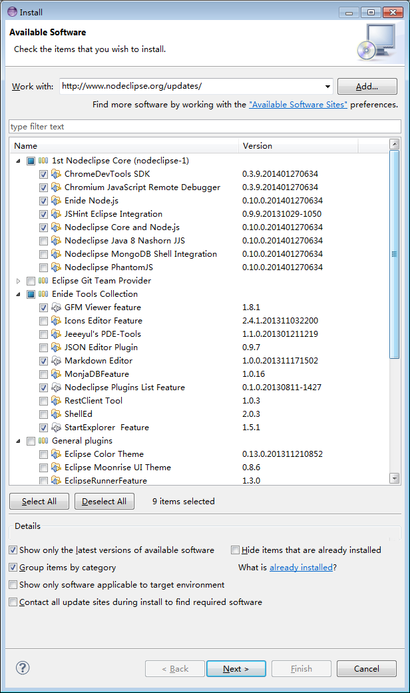

prerequisites
In short words, install Node.js with needed packages, Java and Eclipse package like Enide 2015:
- 1.
 If you don't have, get latest Node.js
If you don't have, get latest Node.js
http://www.nodejs.org/download/
or io.js - 2. Then install Nodeclipse CLI and Express as follows.
$ npm install -g nodeclipse
$ npm install -g express
$ npm install -g express-generator
If you are going to use CoffeeScript, do$ npm install -g coffee-script
- 3.
 If you don't have, download & install JDK 8 from
Oracle Java SE Downloads.
For example "Java Platform (JDK) 8u45".
If you don't have, download & install JDK 8 from
Oracle Java SE Downloads.
For example "Java Platform (JDK) 8u45".
There are issues with Java 7 and 6 #71 #72 .
Note 0: If you don't know what version is used by Eclipse, check in Preferences -> Nodeclipse. The Eclipse most recommended way to configure what JDK to use is to configure ineclipse.ini.
- 4.a Get
Enide 2015 with all Nodeclipse plugins included.
{% include enide-2015-downloads.html %}
That is enough for Node.js, JavaScript and Java development. You can update to the latest version
and install even more from Nodeclipse Updates repository, see "b) update site".
For MacOC X there was also download method using
homebrew-cask.
- Install homebrew (
ruby -e "$(curl -fsSL https://raw.github.com/Homebrew/homebrew/go/install)"). - Tap cask repo (
brew tap phinze/cask). - Install Enide Studio 2014 by Nodeclipse (
brew cask install nodeclipse).
For Windows there was also older Enide Studio 2014 (Eclipse 4.4 Luna distribution) and Enide Studio 0.5 (Eclipse 4.3 Kepler distribution) with Nodeclipse plugins pre-installed and configured. Download it from SourceForge, then update following "Installation Instructions". (CoffeeScript plugin works fine with Eclipse 4.3.0 platform.) - Install homebrew (
- 4.b or Download and install Eclipse for your OS. Recommended is "Eclipse IDE for Committers" (actually it is Standard/SDK), "Eclipse IDE for Java Developers" or "Eclipse for Java/DSL Developers". You can also install Nodeclipse/Enide plugins into Aptana Studio (see issue #181), Red Hat JBoss Developer Studio, STS Spring Tool Suite or other Eclipse-based software like Adobe Flash Builder, IBM Rational products and SAP NetWeaver Developer Studio.
Installation\Update Instructions
(for Eclipse or Enide [Studio]) In short words, drag-and-drop {% include nodeclipse_install_button.html %} on Eclipse main toolbar and get Enide 2015 plugins.a) Marketplace (Recommended way: a bit quicker)
1. Start Eclipse.
2. Drag and drop {% include nodeclipse_install_button.html %} into a running Eclipse (menu area) to install Nodeclipse.
See tip how
2. Review the features that you are about to install. Click Next.
3. Read the license agreements,
and then select I accept the terms of the license agreements. Click Finish.
4. You will then be asked if you would like to restart Eclipse. Click Restart Now.
5. Switch to Node perspective (e.g. Window -> Open Perspective -> Other ... -> Node).
6. Now you are ready to develop Node.js applications with Nodeclipse!
b) update site (bigger choice)
1. Start Eclipse, then select Help > Install New Software...
2. Enter the update site URL into the Work with text box:
http://www.nodeclipse.org/updates/
or the one that is quicker but changes every release
{% include nodeclipse_update_site.html %}
Select with checkbox what you want to install.
("The more, the better" does not apply here.
Take note of what features names you are installing.)
Below is Enide-Recommended-Set-for-Nodejs for example.
3. Uncheck "Contact all updates site during install to find required software"
to make installation quicker.
Note that different Eclipse version have different behaviour for that checkbox.
Press the Enter key or Next button.
4. After a while depending of what you had and what you selected,
you should see the center box filled with Eclipse plugins to install.
Click Next.
5. Review the features that you are about to install. Click Next.
6. Read the license agreements,
and then select I accept the terms of the license agreements. Click Finish.
7. You will then be asked if you would like to restart Eclipse. Click Restart Now.
8. Switch to Node perspective (e.g. Window -> Open Perspective -> Other ... -> Node).
9. Now you are ready to develop Node.js applications with Nodeclipse and great tools!
c) Archive (when Internet is slow, not stable or installing many times)
zip archive has content identical to update p2 site
0. Download zip from SourceForge.
1. Start Eclipse.
2. Help -> Install New Software -> Add -> Archive.
Hint for b) & c): keep the file name the same when updating, or remove old path and URLs as Eclipse keeps checking them.
d) Enide p2f file
0. Read more at Marketplace page.
e) Nodeclipse CLI Installer
0. Read more at GitHup page.
1. cd path/to/eclipse
2. nodeclipse install nodejs markdown gfm startexplorer
3. Start Eclipse.
Updating
If you used {% include nodeclipse_update_site.html %} like URL or update site zip archive,
you will just need to install with any above option.
(Also you will need to clean up old update sites in Preferences -> Update/Install -> Available Software Sites.)
Otherwise Eclipse "Help -> Check for updates" should work.
You will be notified about updates if you have "Automatic Updates" enabled in Preferences.
Check home page for announces and news about new plugins and workflow.
Reset perspective after an update for new UI elements to appear:

If you have run into the problem while updating, e.g. "#72", 1) let us know by raising new issue (tell exactly what OS, Java version, Eclipse version and Nodeclipse version is used.) 2) Update to latest JDK. 3) Uninstall then install: 3.1) Uninstall Nodeclipse Core (only 1 feature entry) via Help -> About Eclipse -> Installation details, select Nodeclipse, then Uninstall.. button 3.2) install again.
Troubleshooting
If you can't install, try different way to get Nodeclipse, e.g. other update site, Enide or Enide Studio. Check home page for announcements. Try support options.